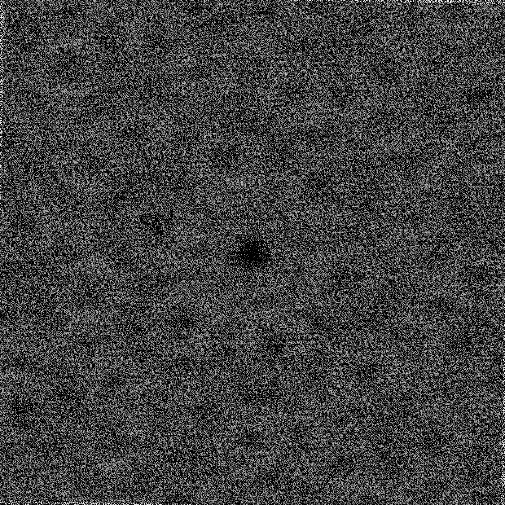
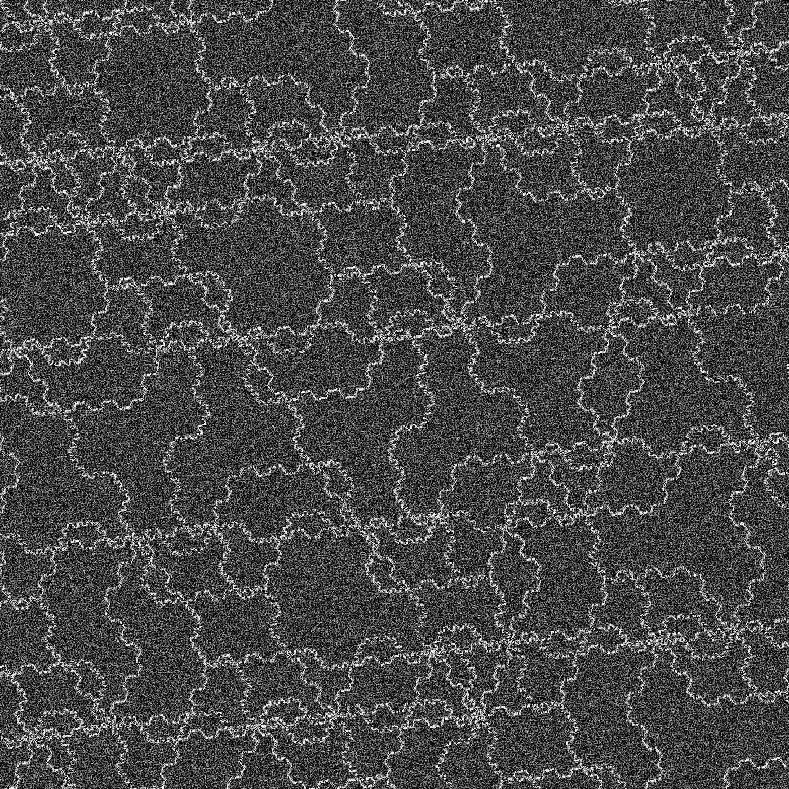

Moiré and aliasing
Layered aperiodic arrays produce moiré landscapes, phason rivers, and a navigable perceived 3D space.
The artifact problem
Regular grids and repeating textures create aliasing and moiré interference when sampled, displayed, or printed at certain scales — the spatial frequencies of the pattern beat against the sampling frequency. Random noise avoids repetition but sacrifices structure and reproducibility. Aperiodic monotile patches offer a third family: ordered but non-repeating layouts whose spectrum has no single dominant lattice frequency to beat against, while remaining deterministic and seed-stable.[6][27] Sensor-array simulations on Hat-family layouts show the same principle in hardware: aperiodic monotile arrays can outperform tested periodic and other aperiodic baselines for spatial sampling and reconstruction.[37]
Layered arrays and beat patterns
Moiré is not only a sampling accident. Take one aperiodic monotile array and layer a second copy on top — same seed, same tile scale, but offset by a small transform: a translation (tx, ty) and/or a rotation θ away from perfect alignment. Where the two structured layers agree locally, contrast cancels; where they disagree, macroscopic bright and dark regions appear. The result is a new visual field that was not present in either layer alone.
Because both layers are aperiodic, the beat pattern does not settle into a simple repeating wallpaper. Instead it produces large-scale structures — cells, channels, and gradients — whose topology changes smoothly as you adjust the overlay parameters. The same deterministic patch can therefore encode a family of related moiré images, all reproducible from the same tile data.
Near-alignment: rosettes and perceived depth
At very small rotations from pure alignment — on the order of one degree — the interference often organizes into radial rosette or cell-like structures: a bright or dark focal center surrounded by lobes that read almost like flowers or lenses. These are not random halos; they are the macroscopic signature of microscopic tile disagreement accumulating across the patch.

{kind=link}
Observers often describe this field as a navigable 3D space: nudging tx and ty pans across the moiré terrain, while small changes in rotation θ act like a zoom or dolly — the rosette cells expand, contract, and hand off to neighbors without ever repeating on a simple grid. The perceived depth is an optical effect, not true geometry, but it is stable and controllable — which makes it interesting for interfaces, data visualization, and spatial encoding.
Phason rivers
At larger rotation offsets the beat field changes character. For example, at 60° between layers, interference can organize into winding, channel-like structures — phason rivers — that flow in broad strokes across the patch. In quasicrystal physics, a phason is a type of structural rearrangement; here the term is used informally for these moiré channels: coherent pathways where the two arrays stay in partial registry over long distances before shearing apart.

{kind=link}
Unlike the near-aligned rosettes, phason rivers are not intuitive. Their paths, branch points, and sensitivity to tiny parameter changes are not yet well characterized for aperiodic monotile arrays. Which rotations produce stable rivers? Do rivers form a navigable network or fragment under translation? Can they encode data or serve as routing channels? These questions are open research frontiers — worthy of systematic study now that monotile patches can be generated and overlaid reproducibly.
Navigation as a control space
Treat the overlay parameters as a three-degree-of-freedom control space:
- tx, ty — translate the upper layer; the moiré field scrolls, revealing new river segments or rosette cells.
- Rotation θ — twist the upper layer; at small θ the effect reads as zoom or magnification through the cell structure; at larger θ the topology shifts toward river networks.
Because the underlying arrays are deterministic, every position in (tx, ty, θ) maps to a unique, reproducible moiré image. That makes the beat field a candidate for indexed visual storage, generative art, and experimental interfaces where a user explores a perceived 3D landscape by steering three continuous parameters.
Where it shows up
- Texture mapping, decals, hatching, and stippling in real-time graphics
- Procedural scatter and environment layout in Blender or game engines
- Print and fabrication pipelines where halftone grids interact with material grain
- Layered aperiodic moiré as a research substrate for phason rivers and spatial encoding
See Computer graphics and Signal processing and imaging for workflow detail.
See also
Computer graphics, Signal processing and imaging, Aperiodic monotile
Categories: Concepts · Computer graphics · Research frontiers